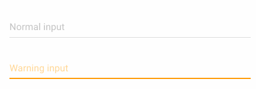
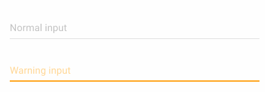

Summary
- Angular2
- Material Design
- Solutions tested
- Angular2 material design
- Angular2 and polymer
- Bootstrap material design and liferay
- Final solution
- Demo
Angular 2
- Developed in Typescript
- Components, no more directives
and controllers
- no more $scope
- Pipes, no more filter
- New dependency injection
- New router
- RxJs (Obeservable and cie)
Material design
- Specifications and guide line
- Developed by google (2014)
- Mobile oriented
- Rapidly used in Android and new
google web application (Maps, Inbox, etc.)
Examples

 

Solutions tested
- Angular2 material design
- library
- Angular2 and polymer
- framework
- Bootstrap material design
- extension of bootstrap
Angular 2 material
- Pros
- Library by google
- Very good integration
with Angular 2
- Cons
- In Alpha
- Too few components
https://material.angular.io
Polymer
- Pros
- Lots of components
- Developed by Google
- Work with Angular 2
- Cons
- Half suported by Firefox
- Don't even ask about IE...
https://www.polymer-project.org
Final solution
- Angular 2
- Material design
- Gulp as build system
- Standalone development
- Iframe in liferay